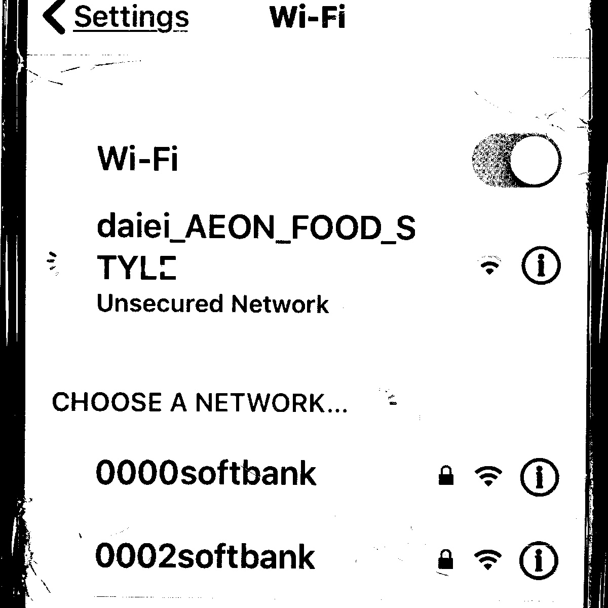

26. 10. 11
어제 쓴 바와 같이 저는 한국으로 출발하기 전에 냉장고를 비우고 전원도 끌 생각입니다. 그리고 다음 기사에 있는 것과 같이 제가 살고 있는 지역(牧田町（1棟～58棟・79棟～103棟）)에서는 가연성 쓰레기를 월요일 아침에 내야 합니다. 저는 이런 이유로 내일 아침 식사할 때에 냉장고 내 식품들을 다 먹고 내일 점심•저녁 그리고 한국으로 출발할 날인 오는 십삼 일 아침엔 라면과 한 사람용 김치나 사먹을 것입니다.
https://www.city.takatsuki.osaka.jp/garbage-day/search/search.php?kana=%E3%81%BE&search=1
이가 한 종류의 소문을 방지하기 위해 소용있을 수도 있으니까 내기로 합니다. (이 일정 내에 '김건희'라는 이름이 없었지만 저는 나경원이나 한학자 같은 사람도 좋아하지 않아요)
13일(화)
서울고법, ‘공직선거법위반 혐의’ 윤석열 전 대통령 항소심 3차 공판(오전 10시)
서울중앙지법, ‘특수공무집행방해 혐의’ 나경원 국민의힘 의원 외 3명 1차 공판준비기일(오전 11시)
서울고법, ‘특정경제범죄가중처벌등에관한법률위반(횡령) 등 혐의’ 한학자 통일교 총재 외 3명 항소심 1차 공판(오후 2시)
14일(수)
서울중앙지법, ‘직권남용감금 등 혐의’ 등 윤석열 전 대통령 외 11명 22차 공판(오전 10시 10분)
15일(목)
서울고법, ‘내란우두머리 등 혐의’ 등 윤석열 전 대통령 외 7명 항소심 21차 공판(오전 10시)
16일(금)
서울고법, ‘일반이적 등 혐의’ 등 윤석열 전 대통령 외 3명 항소심 10차 공판(오전 10시)
서울고법, ‘일반이적 등 혐의’ 등 윤석열 전 대통령 외 3명 항소심 11차 공판(오후 2시)
(이번주 법조 일정) 10월 12일~16일
https://www.lawtimes.co.kr/news/articleView.html?idxno=227545
다음 기사에 의하면 '공판준비기일은 본격적인 심리에 앞서 검찰과 피고인 측의 입장을 확인하고 증거조사 계획 등을 논의하는 절차로, 피고인의 출석 의무는 없다'니까 나경원 등이 이번주 법원에 출석할 가능성은 거의 없을 것이라고 보입니다. 다만 이상한 소문이 날 수도 있으니 조심하세요.
11일 법조계에 따르면 서울고법 형사13부(고법판사 김무신 이우희 유동균)는 오는 13일 오후 2시 정치자금법 위반 등 혐의로 기소된 한 총재와 정원주 전 통일교 비서실장, 윤영호 전 통일교 세계본부장희 항소심 첫 공판기일을 연다. (중략) 같은 날 윤 전 대통령에 대한 체포영장 집행을 방해한 혐의로 기소된 국민의힘 의원들의 재판도 시작된다. 서울중앙지법 형사합의35부(부장판사 백대현)는 13일 오전 11시 특수공무집행방해 혐의로 기소된 나경원·김기현·권영진·윤상현 국민의힘 의원의 첫 공판준비기일을 진행한다. 공판준비기일은 본격적인 심리에 앞서 검찰과 피고인 측의 입장을 확인하고 증거조사 계획 등을 논의하는 절차로, 피고인의 출석 의무는 없다.
'정교유착' 한학자 2심 이번주 시작…'尹 체포방해' 국힘 의원 첫 재판[주목, 이주의 재판]
https://www.news1.kr/society/court-prosecution/6314981
오늘의 부엌 영상:
https://drive.google.com/file/d/1I_RXxNhstPsxL_Ej_EgrfKLFH2PVPi6O/view?usp=drivesdk
https://drive.google.com/file/d/1CqrBJ8q-3u-DRE7H9d2tCLCbDf8lsRIM/view?usp=drivesdk
[오늘의 날씨] 부산·경남(11일, 일)…오후 경남 내륙 5~10㎜ 소나기
https://www.news1.kr/local/busan-gyeongnam/6315644
고노미야에 대해선 전에 쓴 적이 있습니다:
https://anissatta.github.io/l2/misc.html
저의 부모가 지금 살고 있는 주소는 그들이 다시 이사를 안 갔다면 다음과 같이 '大阪府 八尾市 東太子 1-5-30'일 것이니까 만약 제가 부모의 집에 있다는 소문이 퍼지고 있다면 우선 이 주소를 조사해 보시길 바랍니다. 저의 의모는 아들이 두 명 있지만 제가 알았을 땐 다 뚱뚱한 사람였으니까 혼동되지 않을 것입니다.
https://anissatta.github.io/amp/
안녕하세요? 이상한 느낌이 들어서 이런 시각에 일어났는데요. 어제 오후 일곱 시경에 저의 방 초인종을 두 번 누른 사람이 있었지만 어젯밤엔 소음을 내는 오토바이가 거의 없었으니까 아마 저의 이 일에 대한 추측은 맞았을 것입니다. 저의 사랑을 우롱하는 자는 다 벌을 받아야 합니다. 오늘도 오전 10시경에 마르야스에 가고, 점심 후에 다시 다이에이 가기로 합니다. 이번은 저기에서 돌아올 때 뿐만 아니라 저기에 갈 때에도 고노미야서 뭔가 사겠습니다.
오전 2시경에 다시 자겠습니다 💤
26. 10. 10
저녁 식사:
https://drive.google.com/file/d/1jZFFmauKLRdf_-wn8m5uglT7ZHlEiSgW/view?usp=drivesdk
좀 휴식한 후 김치볶음밥을 만들고 그걸 먹겠습니다. 안녕히 주무세요 한국인이시고 아마존 KIX3에서 일을 하신 Lee씨, 제가 사랑하는 유일하신 분.
저는 오늘 여러 가지 휴대폰을 가지고 왔는데 여기서 처음으로 사용한 휴대폰에서는 SSID를 찾을 수가 없고 직접 SSID를 입력했을 때에도 이같이 가입할 수 없었습니다. 전에 여기서 사용한 적이 있는 휴대폰은 잘 Wifi에 가입 가능했습니다. 아마 이런 일 때문에 난 소문도 있었을 것입니다.

만약 이런 일 때문에 소문이 났다면 한법 당신의 휴대폰에 직접 이 SSID를 입력해 보세요. 이 SSID가 존재하지 않는지 SSID가 있는데도 가입할 수 없는지 아실 수 있을지도 모르니까.
(Wifi spot에서) 서울고법이 지금 공개 중인 재판 영상에 윤 전 대통령의 모습이 없기 때문에 난 소문도 있을지도 모릅니다.
이 공판은 2026노1560 사건이고, 법원명은 서울고등법원이고, 피고인명은 윤석열입니다. 다음 절차에 따라 한번 조사해 보시길 바랍니다. (이 사건 공판에 김용현만 피고인으로서 출석한 적이 전에도 있는데요) PS: 내란 우두머리 사건의 사건번호는 2026노648입니다.
https://anissatta.github.io/home-project/kim3/
저도 조사해 봤지만 '2026.10.02 피고인 윤ㅇㅇ 출석'이라고 합니다. 그래서 다시 영상을 봐 보니 윤 전 대통령은 늦게 출석하고 있습니다. 시작부터 약 일 분 후입니다.
https://youtu.be/L4XHWMMZLo4?t=77
https://drive.google.com/file/d/1g3YtnMK4QzNzwDca6p4tB0VcX2_ujjcj/view?usp=drivesdk
이제 다이에이에 가서 무료 Wifi를 사용해 한국방문을 위한 조사 등을 해 봅니다. 돌아오는 길에 고노미야서 술을 살 수도 있어요.
점심 식사:
https://drive.google.com/file/d/1RXeQI2Wh22E7xJGz3Y7tYh0UAkZwRf_H/view?usp=drivesdk
오늘은 특별히 이런 영상도 냈습니다.
https://drive.google.com/file/d/1bkIVEGszLTUNEYlzfIRLsnVmnvdVr_29/view?usp=drivesdk
https://drive.google.com/file/d/1ENnoQCAscu0jb6FSZvqTP2DFn3S_MP0z/view?usp=drivesdk
(再揭) クロネコヤマトについてもう一度書いておくと、噂を流していたと思われる契約社員(灰色の制服を着た社員)は関西ゲートウェイ(茨木にあるセンター)にて私が派遣社員として夕方から午後10時頃まで働いていた際に、クールでないフロアのA(アルファ)ブロックにいた方です。私が韓国のLeeさんと結婚した場合にどのような仕事をするのかは分かりませんが、場合によってはクロネコヤマトが困ることになるかも知れません。最近気になっているのはクロネコヤマトのドライバーの方々です。恐らく私が買い物等に出かける時刻は把握されていると思いますが、あまりに頻繁に見かけるので本来の業務指示を無視して私を偵察しに来ているのではないかとも思います。
오늘의 부엌 영상:
https://drive.google.com/file/d/198Wzap_gXGep-BvscJmh9JZB1ex3wsAP/view?usp=drivesdk
https://drive.google.com/file/d/1-kSVnEPzodDKIU_Bly1Uu2unHGanNJIR/view?usp=drivesdk
Dow Jones Industrial Average (^DJI) (Close: 현지 시간 9일)
https://finance.yahoo.com/quote/%5EDJI/
안녕하세요? 이상한 느낌이 들어서 이런 시각에 일어났습니다. 제가 이번 한국방문을 위해서 다섯 이상의 호텔을 예약했다는 걸 모르면서 처음과 마지막에 묵을 곳에 대해서만 미리 안 사람이 있었다면 제가 자살할 것이라는 소문이 났을 것이니까 이에 대해서 설명해 봅니다. 제가 이런 방식을 선택한 건 첫째로 온 일정을 위해 방을 싸게 제공할 수 있는 호텔이 없고 비교적 장기간 묵을 수 있는 곳에도 작은 침대가 없을 경우가 많았고, 둘째로 만약 제가 선택한 곳 같은 싸게 이용할 수 있는 호텔이 좋지 않을 경우 오래 있는 것에 좀 걱정이 있었고, 셋째로 제가 다른 사람과 함께 가는 것 아냐는 소문을 방지하거나 호텔에 대해 배려할 필요도 있었기 때문입니다. 제가 예약한 방은 다 한 사람 침대만 있거나 온돌실이지만 한 이유로 호텔이 다른 방을 제공할 가능성도 있을 것입니다. 제가 쓴 방식으론 이런 리스크를 적게 할 수 있습니다. 그리고 미리 말한 바와 같이 저는 이번에 다른 지역에도 가는데 서울에는 안 가겠습니다. 아직 김건희에 관한 소문이 퍼지고 있는 것 같으니 이런 일 때문입니다. 오늘도 오전 10시경에 마르야스에 가겠지만 몸 상태를 유지하기 위해서 평소보다 돈을 쓰고 영양가 있는 음식이나 살 거예요.
어제 제가 요도강(淀川)에 그 구두를 내려놓을 때의 영상(히라카타 대교(枚方大橋)엔 전부터 순찰차가 많았답니다):
https://drive.google.com/file/d/1BJ4QYMFDXdflrEMdJXSC3c1Wqeqbthqp/view?usp=drivesdk
https://drive.google.com/file/d/1kysd-96YNJQ1HOU5FuQU1yMAFevMPptT/view?usp=drivesdk
오전 2시경에 다시 자겠습니다 💤
26. 10. 9
냉장고에 있는 파스타면은 오늘 처분하고 내일부터 대한민국으로 출발할 날까지 더 한국인처럼 식사를 하기로 합니다. 안녕히 주무세요 한국인이시고 아마존 KIX3에서 일을 하신 Lee씨, 제가 사랑하는 유일하신 분.
https://drive.google.com/file/d/1BJ4QYMFDXdflrEMdJXSC3c1Wqeqbthqp/view?usp=drivesdk
안녕하세요? 어젯밤에 꾼 꿈 속에서 '한 일본 사람의 친척까지 해를 주러 올 수도 있다'는 느낌이 들었습니다. 오늘도 오전 10시경에 마르야스에 가요.
先日尹前大統領や曺大法院長に関して述べたことは金建希についても言えるのではないかと思いますが、日本の皆様にお願いしたいのは経緯を理解した上で判断し噂を流して下さいということです。最近金建希の健康状態について国民からの問合せが殺到しているといったニュースが出ていましたが(といっても1000件程度だそうですが)、このニュースはそもそも尹夫婦に批判的な(民主党の)発言の中で出てきたものなのです。拘束期間が10月末であることを考えると金建希釈放を狙った尹前大統領の支持者らによる工作である可能性もあるかと思います。また下記記事によると金建希は拘置所が提供する食事に加えて領置金(영치금)で購入した食品をも食べているそうです。
8일 더불어민주당 김의겸 의원실이 법무부로부터 제출받은 자료에 따르면 지난 7월 27일부터 8월 14일까지 19일 동안 서울남부구치소에 접수된 김 씨의 건강 상태 관련 민원은 모두 961건에 달했다. (中略) 앞서 지난 8월 서울고법 형사15-3부 심리로 열린 김 씨의 특정범죄 가중처벌법상 알선수재 혐의 항소심 첫 공판에서 정지원 전 대통령실 행정관은 김 씨의 건강 상태에 대해 “하루 종일 누워만 계셔야 하고 식사를 거의 안 하셔서 일어설 기력도 없다”는 취지로 증언했다. 하지만 김 의원실이 확보한 구치소 내부 보고서에는 다소 다른 내용이 담겼다. 김 씨는 지난 8월 어지럼증을 호소해 수액 처치를 받은 것으로 파악됐다. 다만 식사와 관련해서는 구치소에서 제공하는 단체식을 선택적으로 먹었고, 영치금으로 구매한 식품도 취식한 것으로 기록됐다. 건강 이상이 전혀 없었다는 의미는 아니지만, 법정에서 나온 ‘거의 식사를 하지 못하고 일어설 기력도 없다’는 증언과는 온도 차가 있다는 것이다. 논란은 김 씨의 구속 기간 만료 시점과 맞물리면서 정치권으로 번지고 있다. 김 씨의 3대 의혹 사건 상고심 구속 기간 만료일은 오는 31일이다. 구속 상태로 재판을 계속할 수 있는 시간이 얼마 남지 않은 가운데 건강 상태를 둘러싼 민원이 대규모로 제기된 사실이 드러난 것이다. 야권에서는 이를 두고 김 씨의 건강 문제를 향후 석방이나 보석의 명분으로 활용하려는 것 아니냐는 의혹까지 제기하고 있다. 김의겸 의원은 “김건희씨 식사 걱정 등 민원으로 교정 공무원들이 일반 수용자에게 써야 할 시간마저 빼앗기고 있다”며 “향후 석방 등의 특혜 명분으로 오인되거나 악용돼서는 안 되며 모든 수용자에 동일하고 엄정한 원칙 적용이 필요하다”고 질타했다. 김씨의 구속 기간 관련 부분은 지난 6일 대법원 국정감사에서도 언급된 바 있다. 민주당 박균택 의원은 그날 조희대 대법원장을 향해 김 씨의 재판이 10월 31일까지 선고되지 않으면 석방될 수 있다는 점을 거론했다. 박 의원은 “세간에는 김건희를 풀어주려고 사건을 전원합의체로 가져가서 시간을 끄는 명분을 삼는 것 아니냐고 의심하는 시각도 있다”며 “그런 오해를 받으면 안 될 것”이라고 지적했다. 이어 선고 시점을 물었지만 조 대법원장은 답변하지 않았다.
(10. 8) “식사 못해” 김건희 안부 민원 폭증…구치소 보고서엔 “영치금으로 사먹어”
https://m.mk.co.kr/amp/12171650
下記は尹夫婦が受け取った領置金(영치금)についての記事です。
윤석열 전 대통령과 김건희 여사 부부가 작년 구속된 이후 대통령 연봉의 8배에 달하는 영치금을 받은 것으로 나타났다.
(10. 8) 윤석열·김건희, 1년여간 영치금 21억원…"대통령 연봉 8배"(종합)
https://www.yna.co.kr/view/AKR20261008208151004
(再揭) クロネコヤマトについてもう一度書いておくと、噂を流していたと思われる契約社員(灰色の制服を着た社員)は関西ゲートウェイ(茨木にあるセンター)にて私が派遣社員として夕方から午後10時頃まで働いていた際に、クールでないフロアのA(アルファ)ブロックにいた方です。私が韓国のLeeさんと結婚した場合にどのような仕事をするのかは分かりませんが、場合によってはクロネコヤマトが困ることになるかも知れません。最近気になっているのはクロネコヤマトのドライバーの方々です。恐らく私が買い物等に出かける時刻は把握されていると思いますが、あまりに頻繁に見かけるので本来の業務指示を無視して私を偵察しに来ているのではないかとも思います。